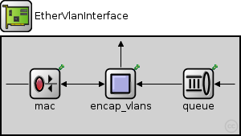
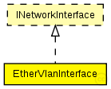

TODO auto-generated module
The following diagram shows usage relationships between types.
Unresolved types are missing from the diagram.
The following diagram shows inheritance relationships for this type. Unresolved types are missing from the diagram. 
If a module type shows up more than once, that means it has been defined in more than one NED file.
| StandardVlanHost (compound module) |
IP host with TCP, UDP layers and applications. |
| Name | Type | Default value | Description |
|---|---|---|---|
| QMgmtUnit | string | "Q_mgmt_PerVlan" |
| Name | Value | Description |
|---|---|---|
| display | bgb=296,121;i=block/ifcard |
| Name | Direction | Size | Description |
|---|---|---|---|
| netwIn | input | ||
| netwOut | output | ||
| phys | inout |
| Name | Type | Default value | Description |
|---|---|---|---|
| mac.promiscuous | bool | true |
ALWAYS TRUE... LLC Will take care... |
| mac.address | string | "auto" |
MAC address as hex string (12 hex digits), or "auto". "auto" values will be replaced by a generated MAC address in init stage 0. |
| mac.txrate | double | 100Mbps |
maximum data rate supported by this station (bit/s); actually chosen speed may be lower due to auto- configuration. 0 means fully auto-configured. |
| mac.duplexEnabled | bool | true |
whether duplex mode can be enabled or not; whether MAC will actually use duplex mode depends on the result of the auto-configuration process (duplex is only possible with DTE-to-DTE connection). |
| mac.txQueueLimit | int | 1000 |
maximum number of frames queued up for transmission; additional frames are dropped. Only used if queueModule=="" |
| mac.queueModule | string | "" |
name of optional external queue module |
| mac.mtu | int | 1500 | |
| encap_vlans.vlans | string | "" | |
| encap_vlans.vlan_txrate | double | 100Mbps |
// // TODO auto-generated module // module EtherVlanInterface like INetworkInterface { parameters: @display("bgb=296,121;i=block/ifcard"); string QMgmtUnit = default("Q_mgmt_PerVlan"); gates: input netwIn; output netwOut; inout phys; submodules: mac: EtherMacVlan { @display("p=54,58"); promiscuous = default(true); } encap_vlans: EtherEncapVlans { @display("p=148,58"); } queue: <QMgmtUnit> like OutputQueue { @display("p=245,58"); } connections: netwIn --> queue.in; queue.out --> encap_vlans.upperLayerIn; netwOut <-- { @display("m=n"); } <-- encap_vlans.upperLayerOut; encap_vlans.lowerLayerOut --> mac.upperLayerIn; encap_vlans.lowerLayerIn <-- mac.upperLayerOut; mac.phys <--> phys; }
 This documentation is released under the Creative Commons license
This documentation is released under the Creative Commons license